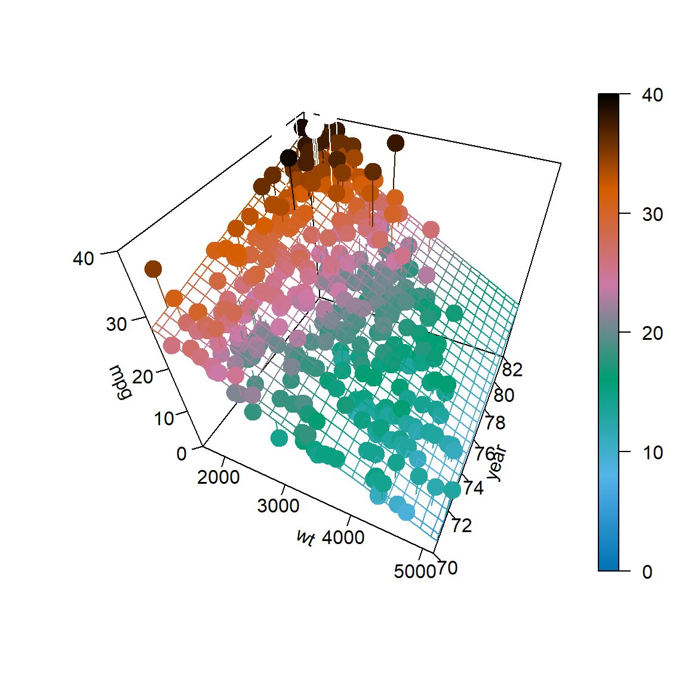
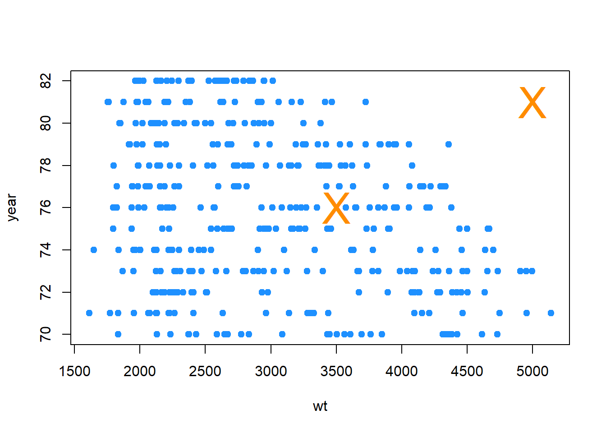
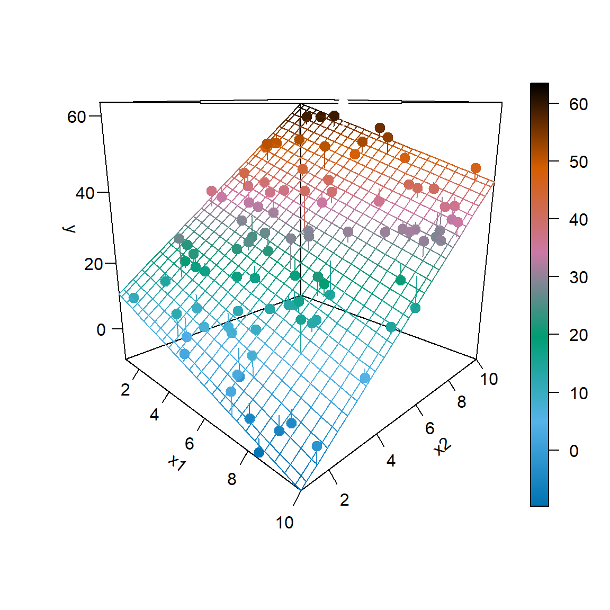
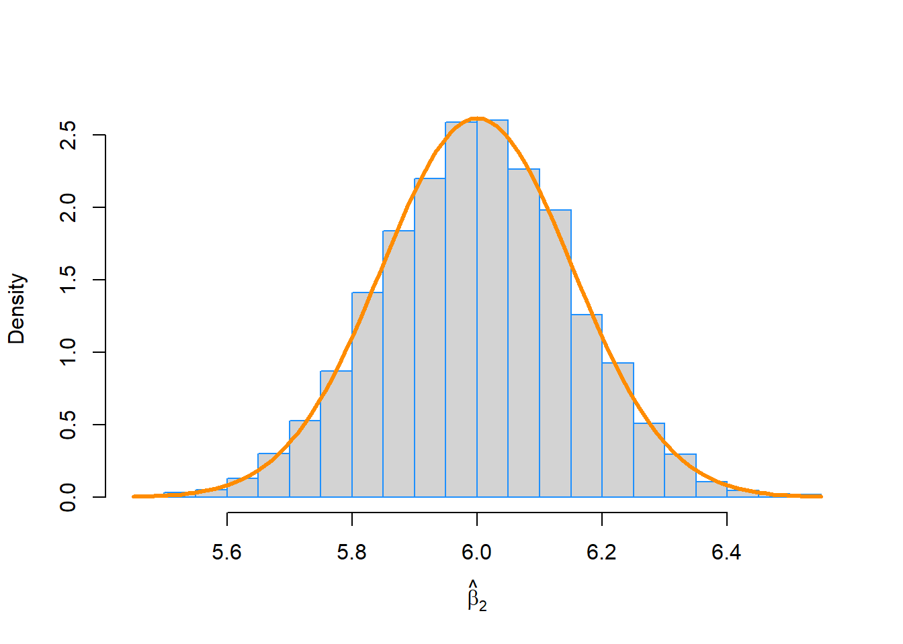

Capítulo 9 Regresión lineal múltiple
“La vida es realmente simple, pero insistimos en complicarla.”
— Confucio
Después de leer este capítulo, podrá:
- Construir e interpretar modelos de regresión lineal con más de un predictor.
- Comprender cómo se obtienen los modelos de regresión mediante matrices.
- Crear estimaciones de intervalos y realizar pruebas de hipótesis para múltiples parámetros de regresión.
- Formular e interpretar estimaciones de intervalos para la respuesta media en diversas condiciones.
- Comparar modelos anidados usando una prueba F ANOVA.
Los dos últimos capítulos vimos cómo ajustar un modelo que asumía una relación lineal entre una variable de respuesta y una única variable predictora. Específicamente, definimos el modelo de regresión lineal simple,
\[ Y_i = \beta_0 + \beta_1 x_i + \epsilon_i \]
donde \(\epsilon_i \sim N(0, \sigma^2)\).
Sin embargo, rara vez se da el caso de que un conjunto de datos tenga una única variable predictora. También es raro el caso de que una variable respuesta solo dependa de una sola variable. Entonces, en este capítulo, ampliaremos nuestro modelo lineal actual para permitir que una respuesta dependa de múltiples predictores.
# leer los datos de la web
autompg = read.table(
"http://archive.ics.uci.edu/ml/machine-learning-databases/auto-mpg/auto-mpg.data",
quote = "\"",
comment.char = "",
stringsAsFactors = FALSE)
# dar los encabezados del marco de datos
colnames(autompg) = c("mpg", "cyl", "disp", "hp", "wt", "acc", "year", "origin", "name")
# eliminar los datos que faltan, que se almacenan como "?"
autompg = subset(autompg, autompg$hp != "?")
# eliminar el plymouth dependiente, ya que causa algunos problemas
autompg = subset(autompg, autompg$name != "plymouth reliant")
# dar los nombres de las filas del conjunto de datos, según el motor, el año y el nombre
rownames(autompg) = paste(autompg$cyl, "cylinder", autompg$year, autompg$name)
# eliminar la variable para el nombre, así como el origen
autompg = subset(autompg, select = c("mpg", "cyl", "disp", "hp", "wt", "acc", "year"))
# cambiar caballos de fuerza de carácter a numérico
autompg$hp = as.numeric(autompg$hp)
# comprobar la estructura final de los datos
str(autompg)## 'data.frame': 390 obs. of 7 variables:
## $ mpg : num 18 15 18 16 17 15 14 14 14 15 ...
## $ cyl : int 8 8 8 8 8 8 8 8 8 8 ...
## $ disp: num 307 350 318 304 302 429 454 440 455 390 ...
## $ hp : num 130 165 150 150 140 198 220 215 225 190 ...
## $ wt : num 3504 3693 3436 3433 3449 ...
## $ acc : num 12 11.5 11 12 10.5 10 9 8.5 10 8.5 ...
## $ year: int 70 70 70 70 70 70 70 70 70 70 ...Una vez más, discutiremos un conjunto de datos con información sobre automóviles. Este conjunto de datos, que se puede encontrar en el UCI Machine Learning Repository contiene una variable de respuesta mpg que almacena la eficiencia de combustible de los automóviles en la ciudad, así como varias variables predictoras para los atributos de los vehículos. Cargamos los datos y realizamos algunos arreglos básicos antes de pasar al análisis.
Por ahora nos centraremos en el uso de dos variables, wt yyear, como variables predictoras. Es decir, nos gustaría modelar la eficiencia de combustible (mpg) de un automóvil en función de su peso (wt) y el año del modelo (year). Para ello, definiremos el siguiente modelo lineal,
\[ Y_i = \beta_0 + \beta_1 x_{i1} + \beta_2 x_{i2} + \epsilon_i, \qquad i = 1, 2, \ldots, n \]
donde \(\epsilon_i \sim N(0, \sigma^2)\). En esta notación definiremos:
- \(x_{i1}\) como el peso (
wt) de el \(i\)-esimo carro. - \(x_{i2}\) como el año del modelo (
year) de el \(i\)-esimo carro.
En la siguiente imagen se visualizará lo que nos gustaría lograr. Los puntos de datos $(x_{i1},x_{i2}, y_i) $ ahora existen en un espacio tridimensional, por lo que en lugar de ajustar una línea a los datos, ajustaremos un plano. (Pronto pasaremos a dimensiones más altas, por lo que este será el último ejemplo que sea fácil de visualizar y pensar de esta manera).

¿Cómo encontramos un plano así?, bueno, nos gustaría un plano que esté lo más cerca posible de los puntos de datos. Es decir, nos gustaría que minimizara los errores que está cometiendo. ¿Cómo definiremos estos errores? ¡Distancia al cuadrado, por supuesto! Entonces, nos gustaría minimizar
\[ f(\beta_0, \beta_1, \beta_2) = \sum_{i = 1}^{n}(y_i - (\beta_0 + \beta_1 x_{i1} + \beta_2 x_{i2}))^2 \]
con respecto a \(\beta_0\), \(\beta_1\) y \(\beta_2\). ¿Cómo lo hacemos? Es otro problema sencillo de cálculo multivariado. Todo lo que hemos hecho es agregar una variable extra desde que hicimos esto la última vez. Entonces, nuevamente, derivamos con respecto a cada uno de los \(\beta_0\), \(\beta_1\) y \(\ beta_2\) y los igualamos a cero, luego resolvemos el sistema de ecuaciones resultante. Es decir,
\[ \begin{aligned} \frac{\partial f}{\partial \beta_0} &= 0 \\ \frac{\partial f}{\partial \beta_1} &= 0 \\ \frac{\partial f}{\partial \beta_2} &= 0 \end{aligned} \]
Una vez hecho esto, volveremos a obtener las ecuaciones normales.
\[ \begin{aligned} n \beta_0 + \beta_1 \sum_{i = 1}^{n} x_{i1} + \beta_2 \sum_{i = 1}^{n} x_{i2} &= \sum_{i = 1}^{n} y_i \\ \beta_0 \sum_{i = 1}^{n} x_{i1} + \beta_1 \sum_{i = 1}^{n} x_{i1}^2 + \beta_2 \sum_{i = 1}^{n} x_{i1}x_{i2} &= \sum_{i = 1}^{n} x_{i1}y_i \\ \beta_0 \sum_{i = 1}^{n} x_{i2} + \beta_1 \sum_{i = 1}^{n} x_{i1}x_{i2} + \beta_2 \sum_{i = 1}^{n} x_{i2}^2 &= \sum_{i = 1}^{n} x_{i2}y_i \end{aligned} \]
Ahora tenemos tres ecuaciones y tres variables, que podríamos resolver, o simplemente dejar que R resuelva por nosotros.
mpg_model = lm(mpg ~ wt + year, data = autompg)
coef(mpg_model)## (Intercept) wt year
## -14.637641945 -0.006634876 0.761401955\[ \hat{y} = -14.6376419 + -0.0066349 x_1 + 0.761402 x_2 \]
Aquí hemos vuelto a ajustar nuestro modelo usando lm(), sin embargo, hemos introducido un nuevo elemento sintáctico. La fórmula mpg ~ wt + year ahora dice: “modela la variable de respuesta mpg como una función lineal de wt y year”. Es decir, estimará una intersección, así como los coeficientes de la pendiente para wt yyear. Luego los extraemos como lo hicimos antes de usar coef().
En la configuración de regresión lineal múltiple, algunas de las interpretaciones de los coeficientes cambian ligeramente.
Aquí, \(\hat{\beta}_0 = -14.6376419\) es nuestra estimación de \(\beta_0\), la media de millas por galón de un automóvil que pesa 0 libras y fue construido en 1900. Vea que nuestra estimación aquí es negativa, lo cual es una imposibilidad física. Sin embargo, esto no es inesperado, ya que no deberíamos esperar que nuestro modelo sea preciso para autos de 1900 que pesan 0 libras. (¡Porque nunca existieron!) Este no es un gran cambio con respecto a SLR. Es decir, \(\beta_0\) sigue siendo simplemente la media cuando todos los predictores son 0.
La interpretación de los coeficientes frente a nuestros predictores es ligeramente diferente al anterior. Por ejemplo, \(\hat{\beta}_1 = -0.0066349\) es nuestra estimación de \(\beta_1\), el cambio promedio en millas por galón para un aumento de peso (\(x_{1}\) ) de una libra para un automóvil de un determinado año de modelo, es decir, por un valor fijo de \(x_{2}\). Tenga en cuenta que este coeficiente es en realidad el mismo para cualquier valor dado de \(x_{2}\). Más adelante, veremos modelos que permiten un cambio diferente en la respuesta media para diferentes valores de \(x_{2}\). También tenga en cuenta que esta estimación es negativa, lo que esperaríamos ya que, en general, la eficiencia del combustible disminuye para los vehículos más grandes. Recuerde que en la configuración de regresión lineal múltiple, esta interpretación depende de un valor fijo para \(x_{2}\), es decir, “para un automóvil de un determinado año de modelo”. Es posible que la relación indirecta entre la eficiencia del combustible y el peso no se mantenga cuando se incluye un factor adicional, digamos un año, y por lo tanto podríamos tener el signo de nuestro coeficiente invertido.
Por último, \(\hat{\beta}_2 = 0.761402\) es nuestra estimación de \(\beta_2\), el cambio promedio en millas por galón para un aumento de un año en el año modelo (\(x_{2}\)) por un automóvil de cierto peso, es decir, por un valor fijo de \(x_{1}\). No es de extrañar que la estimación sea positiva. Esperamos que a medida que pase el tiempo y los años, la tecnología mejore para que un automóvil de un peso específico obtenga un mejor kilometraje ahora en comparación con sus predecesores. Y, sin embargo, el coeficiente podría haber sido negativo porque también incluimos el peso como variable, y no estrictamente como un valor fijo.
9.1 Enfoque matricial para la regresión
En nuestro ejemplo anterior, usamos dos variables predictoras, pero solo se necesitará un poco más de trabajo para permitir un número arbitrario de variables predictoras y derivar sus estimaciones de coeficientes. Podemos considerar el modelo,
\[ Y_i = \beta_0 + \beta_1 x_{i1} + \beta_2 x_{i2} + \cdots + \beta_{p-1} x_{i(p-1)} + \epsilon_i, \qquad i = 1, 2, \ldots, n \]
donde \(\epsilon_i\sim N(0,\sigma^2)\). En este modelo, hay \(p - 1\) variables predictoras, \(x_1,x_2,\cdots, x_{p-1}\). Hay un total de \(p\) \(\beta\) -parámetros y un solo parámetro \(\sigma^2\) para la varianza de los errores. (Cabe señalar que casi con la misma frecuencia, los autores usarán \(p\) como el número de predictores, lo que hace que el número total de \(\beta\) parámetros \(p+1\). Esto siempre es algo que debe tener en cuenta al leer sobre regresión múltiple. No existe un estándar que se utilice con más frecuencia).
Si tuviéramos que apilar las ecuaciones lineales \(n\) que representan cada \(Y_i\) en un vector de columna, obtenemos lo siguiente.
\[ \begin{bmatrix} Y_1 \\ Y_2 \\ \vdots\\ Y_n \\ \end{bmatrix} = \begin{bmatrix} 1 & x_{11} & x_{12} & \cdots & x_{1(p-1)} \\ 1 & x_{21} & x_{22} & \cdots & x_{2(p-1)} \\ \vdots & \vdots & \vdots & & \vdots \\ 1 & x_{n1} & x_{n2} & \cdots & x_{n(p-1)} \\ \end{bmatrix} \begin{bmatrix} \beta_0 \\ \beta_1 \\ \beta_2 \\ \vdots \\ \beta_{p-1} \\ \end{bmatrix} + \begin{bmatrix} \epsilon_1 \\ \epsilon_2 \\ \vdots\\ \epsilon_n \\ \end{bmatrix} \]
\[ Y = X \beta + \epsilon \]
\[ Y = \begin{bmatrix} Y_1 \\ Y_2 \\ \vdots\\ Y_n \end{bmatrix}, \quad X = \begin{bmatrix} 1 & x_{11} & x_{12} & \cdots & x_{1(p-1)} \\ 1 & x_{21} & x_{22} & \cdots & x_{2(p-1)} \\ \vdots & \vdots & \vdots & & \vdots \\ 1 & x_{n1} & x_{n2} & \cdots & x_{n(p-1)} \\ \end{bmatrix}, \quad \beta = \begin{bmatrix} \beta_0 \\ \beta_1 \\ \beta_2 \\ \vdots \\ \beta_{p-1} \\ \end{bmatrix}, \quad \epsilon = \begin{bmatrix} \epsilon_1 \\ \epsilon_2 \\ \vdots\\ \epsilon_n \end{bmatrix} \]
Así que ahora con los datos
\[ y = \begin{bmatrix} y_1 \\ y_2 \\ \vdots\\ y_n \end{bmatrix} \]
Al igual que antes, podemos estimar \(\beta\) minimizando,
\[ f(\beta_0, \beta_1, \beta_2, \cdots, \beta_{p-1}) = \sum_{i = 1}^{n}(y_i - (\beta_0 + \beta_1 x_{i1} + \beta_2 x_{i2} + \cdots + \beta_{p-1} x_{i(p-1)}))^2, \]
que requeriría tomar \(p\) derivadas, que dan como resultado las siguientes ecuaciones normales.
\[ \begin{bmatrix} n & \sum_{i = 1}^{n} x_{i1} & \sum_{i = 1}^{n} x_{i2} & \cdots & \sum_{i = 1}^{n} x_{i(p-1)} \\ \sum_{i = 1}^{n} x_{i1} & \sum_{i = 1}^{n} x_{i1}^2 & \sum_{i = 1}^{n} x_{i1}x_{i2} & \cdots & \sum_{i = 1}^{n} x_{i1}x_{i(p-1)} \\ \vdots & \vdots & \vdots & & \vdots \\ \sum_{i = 1}^{n} x_{i(p-1)} & \sum_{i = 1}^{n} x_{i(p-1)}x_{i1} & \sum_{i = 1}^{n} x_{i(p-1)}x_{i2} & \cdots & \sum_{i = 1}^{n} x_{i(p-1)}^2 \\ \end{bmatrix} \begin{bmatrix} \beta_0 \\ \beta_1 \\ \vdots \\ \beta_{p-1} \\ \end{bmatrix} = \begin{bmatrix} \sum_{i = 1}^{n} y_i \\ \sum_{i = 1}^{n} x_{i1}y_i \\ \vdots \\ \sum_{i = 1}^{n} x_{i(p-1)}y_i \\ \end{bmatrix} \]
Las ecuaciones normales se pueden escribir mucho más resumidas en notación matricial,
\[ X^\top X \beta = X^\top y. \]
Entonces podemos resolver esta expresión multiplicando ambos lados por el inverso de \(X^\top X\), que existe, siempre que las columnas de \(X\) sean linealmente independientes. Entonces, como siempre, denotamos nuestra solución con un sombrero.
\[ \hat{\beta} = \left( X^\top X \right)^{-1}X^\top y \]
Para verificar que esto es lo que R ha hecho por nosotros en el caso de dos predictores, creamos una matriz \(X\). Tenga en cuenta que la primera columna son todos 1 y las columnas restantes contienen los datos.
n = nrow(autompg)
p = length(coef(mpg_model))
X = cbind(rep(1, n), autompg$wt, autompg$year)
y = autompg$mpg
(beta_hat = solve(t(X) %*% X) %*% t(X) %*% y)## [,1]
## [1,] -14.637641945
## [2,] -0.006634876
## [3,] 0.761401955coef(mpg_model)## (Intercept) wt year
## -14.637641945 -0.006634876 0.761401955\[ \hat{\beta} = \begin{bmatrix} -14.6376419 \\ -0.0066349 \\ 0.761402 \\ \end{bmatrix} \]
En nuestra nueva notación, los valores ajustados se pueden escribir
\[ \hat{y} = X \hat{\beta}. \]
\[ \hat{y} = \begin{bmatrix} \hat{y}_1 \\ \hat{y}_2 \\ \vdots\\ \hat{y}_n \end{bmatrix} \]
Luego, podemos crear un vector para los valores residuales,
\[ e = \begin{bmatrix} e_1 \\ e_2 \\ \vdots\\ e_n \end{bmatrix} = \begin{bmatrix} y_1 \\ y_2 \\ \vdots\\ y_n \end{bmatrix} - \begin{bmatrix} \hat{y}_1 \\ \hat{y}_2 \\ \vdots\\ \hat{y}_n \end{bmatrix}. \]
Y, por último, podemos actualizar nuestra estimación de $ ^2$.
\[ s_e^2 = \frac{\sum_{i=1}^n (y_i - \hat{y}_i)^2}{n - p} = \frac{e^\top e}{n-p} \]
Recuerde, nos gusta esta estimación porque no tiene sesgo, es decir,
\[ \text{E}[s_e^2] = \sigma^2 \]
Tenga en cuenta que el cambio desde la estimación SLR hasta ahora está en el denominador. Específicamente ahora dividimos por \(n-p\) en lugar de \(n-2\). O en realidad, deberíamos tener en cuenta que en el caso de SLR, hay dos parámetros \(\beta\) y, por tanto, \(p = 2\).
También tenga en cuenta que si nos ajustamos al modelo \(Y_i = \beta + \epsilon_i\) que \(\hat{y} = \bar{y}\), \(p = 1\) y \(s_e^2\) se convertiría
\[ s_e^2 = \frac{\sum_{i=1}^n (y_i - \bar{y})^2}{n - 1} \]
que es probablemente la primera desviación estándar muestral que vio en una clase de estadística matemática. La misma razón para \(n - 1\) en este caso, que estimamos un parámetro, por lo que perdemos un grado de libertad. Ahora, en general, estamos estimando los parámetros \(p\), los parámetros \(\beta\), por lo que perdemos \(p\) grados de libertad.
Además, recuerde que la mayoría de las veces nos interesará \(s_e\), el error estándar residual como lo llama R,
\[ s_e = \sqrt{\frac{\sum_{i=1}^n (y_i - \hat{y}_i)^2}{n - p}}. \]
En R, podríamos acceder directamente a \(s_e\) para un modelo ajustado, como hemos visto antes.
summary(mpg_model)$sigma## [1] 3.431367Y ahora podemos verificar que nuestra matemática anterior está calculando las mismas cantidades.
y_hat = X %*% solve(t(X) %*% X) %*% t(X) %*% y
e = y - y_hat
sqrt(t(e) %*% e / (n - p))## [,1]
## [1,] 3.431367sqrt(sum((y - y_hat) ^ 2) / (n - p))## [1] 3.4313679.2 Distribución muestral
Como podemos ver a continuación, los resultados de llamar a summary () son similares a SLR, pero hay algunas diferencias, la más obvia es una nueva fila para la variable predictora agregada.
summary(mpg_model)##
## Call:
## lm(formula = mpg ~ wt + year, data = autompg)
##
## Residuals:
## Min 1Q Median 3Q Max
## -8.852 -2.292 -0.100 2.039 14.325
##
## Coefficients:
## Estimate Std. Error t value Pr(>|t|)
## (Intercept) -1.464e+01 4.023e+00 -3.638 0.000312 ***
## wt -6.635e-03 2.149e-04 -30.881 < 2e-16 ***
## year 7.614e-01 4.973e-02 15.312 < 2e-16 ***
## ---
## Signif. codes: 0 '***' 0.001 '**' 0.01 '*' 0.05 '.' 0.1 ' ' 1
##
## Residual standard error: 3.431 on 387 degrees of freedom
## Multiple R-squared: 0.8082, Adjusted R-squared: 0.8072
## F-statistic: 815.6 on 2 and 387 DF, p-value: < 2.2e-16Para comprender estas diferencias en detalle, primero necesitaremos obtener la distribución muestral de \(\hat{\beta}\).
La derivación de la distribución muestral de \(\hat{\beta}\) implica la distribución normal multivariante.
Nuestro objetivo ahora es obtener la distribución del vector \(\hat{\beta}\),
\[ \hat{\beta} = \begin{bmatrix} \hat{\beta}_0 \\ \hat{\beta}_1 \\ \hat{\beta}_2 \\ \vdots \\ \hat{\beta}_{p-1} \end{bmatrix} \]
Recuerde de la última vez que cuando hablamos de distribuciones muestrales, ahora consideramos que \(\hat{\beta}\) es un vector aleatorio, por lo que usamos \(Y\) en lugar del vector de datos \(y\).
\[ \hat{\beta} = \left( X^\top X \right)^{-1}X^\top Y \]
Entonces es una consecuencia de la distribución normal multivariante que,
\[ \hat{\beta} \sim N\left(\beta, \sigma^2 \left(X^\top X\right)^{-1} \right). \]
Entonces tenemos
\[ \text{E}[\hat{\beta}] = \beta \]
y para cualquier \(\hat{\beta}_j\) tenemos
\[ \text{E}[\hat{\beta}_j] = \beta_j. \]
Tambien tenemos
\[ \text{Var}[\hat{\beta}] = \sigma^2 \left( X^\top X \right)^{-1} \]
y para cualquier \(\hat{\beta}_j\) tenemos
\[ \text{Var}[\hat{\beta}_j] = \sigma^2 C_{jj} \]
donde
\[ C = \left(X^\top X\right)^{-1} \]
y los elementos de \(C\) se denotan
\[ C = \begin{bmatrix} C_{00} & C_{01} & C_{02} & \cdots & C_{0(p-1)} \\ C_{10} & C_{11} & C_{12} & \cdots & C_{1(p-1)} \\ C_{20} & C_{21} & C_{22} & \cdots & C_{2(p-1)} \\ \vdots & \vdots & \vdots & & \vdots \\ C_{(p-1)0} & C_{(p-1)1} & C_{(p-1)2} & \cdots & C_{(p-1)(p-1)} \\ \end{bmatrix}. \]
Esencialmente, los elementos de la diagonal corresponden al vector \(\beta\).
Entonces, el error estándar para el vector \(\hat{\beta}\) viene dado por
\[ \text{SE}[\hat{\beta}] = s_e \sqrt{\left( X^\top X \right)^{-1}} \]
y en particular \(\hat{\beta}_j\)
\[ \text{SE}[\hat{\beta}_j] = s_e \sqrt{C_{jj}}. \]
Por último, cada uno de los \(\hat{\beta}_j\) siguen una distribución normal,
\[ \hat{\beta}_j \sim N\left(\beta_j, \sigma^2 C_{jj} \right). \]
por lo tanto
\[ \frac{\hat{\beta}_j - \beta_j}{s_e \sqrt{C_{jj}}} \sim t_{n-p}. \]
Ahora que tenemos los resultados de distribución necesarios, podemos pasar a realizar pruebas y hacer estimaciones de intervalo.
9.2.1 Pruebas de un solo parámetro
La primera prueba que veremos es una prueba para un solo \(\beta_j\).
\[ H_0: \beta_j = 0 \quad \text{vs} \quad H_1: \beta_j \neq 0 \]
Nuevamente, el estadístico de prueba toma la forma
\[ \text{TS} = \frac{\text{EST} - \text{HYP}}{\text{SE}}. \]
En particular,
\[ t = \frac{\hat{\beta}_j - \beta_j}{\text{SE}[\hat{\beta}_j]} = \frac{\hat{\beta}_j-0}{s_e\sqrt{C_{jj}}}, \]
que, bajo la hipótesis nula, sigue una distribución \(t\) con \(n-p\) grados de libertad.
Recuerde nuestro modelo para mpg,
\[ Y_i = \beta_0 + \beta_1 x_{i1} + \beta_2 x_{i2} + \epsilon_i, \qquad i = 1, 2, \ldots, n \]
donde \(\epsilon_i \sim N(0, \sigma^2)\).
- \(x_{i1}\) como el peso (
wt) de el \(i\)-esimo carro. - \(x_{i2}\) como el año del modelo (
year) de el \(i\)-esimo carro.
Entonces la prueba
\[ H_0: \beta_1 = 0 \quad \text{vs} \quad H_1: \beta_1 \neq 0 \]
se puede encontrar en la salida de summary(), en particular:
summary(mpg_model)$coef## Estimate Std. Error t value Pr(>|t|)
## (Intercept) -14.637641945 4.0233913563 -3.638135 3.118311e-04
## wt -0.006634876 0.0002148504 -30.881372 1.850466e-106
## year 0.761401955 0.0497265950 15.311765 1.036597e-41La estimación (Estimate), el error estándar (Std.Error), el estadístico de prueba (valor t) y el valor p (Pr(>|t|)) para esta prueba se muestran en la segundo fila, etiquetada como wt. Recuerde que el valor p dado aquí es específicamente para una prueba de dos colas, donde el valor hipotético es 0.
También tenga en cuenta en este caso, al plantear la hipótesis nula de que \(\beta_1=0\) y la alternativa esencialmente especifican dos modelos diferentes:
- \(H_0\): \(Y = \beta_0 + \beta_2 x_{2} + \epsilon\)
- \(H_1\): \(Y = \beta_0 + \beta_1 x_{1} + \beta_2 x_{2} + \epsilon\)
Esto es importante. No estamos simplemente probando si existe o no una relación entre el peso y la eficiencia del combustible. Estamos probando si existe una relación entre el peso y la eficiencia del combustible, dado que en el modelo hay un término para el año. (Tenga en cuenta que hemos eliminado algunas indexaciones aquí para facilitar la lectura).
9.2.2 Intervalos de confianza
Dado que \(\hat{\beta}_j\) es nuestra estimación de \(\beta_j\) y tenemos
\[ \text{E}[\hat{\beta}_j] = \beta_j \]
así como el error estándar,
\[ \text{SE}[\hat{\beta}_j] = s_e\sqrt{C_{jj}} \]
y la distribución muestral de \(\hat{\beta}_j\) es Normal, entonces podemos construir fácilmente intervalos de confianza para cada uno de los \(\hat{\beta}_j\).
\[ \hat{\beta}_j \pm t_{\alpha/2, n - p} \cdot s_e\sqrt{C_{jj}} \]
Podemos encontrarlos en R usando el mismo método que antes. Ahora simplemente habrá filas adicionales para los \(\beta\) adicionales.
confint(mpg_model, level = 0.99)## 0.5 % 99.5 %
## (Intercept) -25.052563681 -4.222720208
## wt -0.007191036 -0.006078716
## year 0.632680051 0.8901238599.2.3 Intervalos de confianza para la respuesta media
Como vimos en SLR, podemos crear intervalos de confianza para la respuesta media, es decir, una estimación de intervalo para \(\text{E}[Y \mid X = x]\). En SLR, la media de \(Y\) solo dependía de un valor único \(x\). Ahora, en regresión múltiple, \(\text{E}[Y \mid X = x]\) depende del valor de cada uno de los predictores, por lo que definimos el vector \(x_0\) como,
\[ x_{0} = \begin{bmatrix} 1 \\ x_{01} \\ x_{02} \\ \vdots \\ x_{0(p-1)} \\ \end{bmatrix}. \]
Entonces nuestra estimación de \(\text{E}[Y \mid X = x_0]\) para un conjunto de valores \(x_0\) viene dada por
\[ \begin{aligned} \hat{y}(x_0) &= x_{0}^\top\hat{\beta} \\ &= \hat{\beta}_0 + \hat{\beta}_1 x_{01} + \hat{\beta}_2 x_{02} + \cdots + \hat{\beta}_{p-1} x_{0(p-1)}. \end{aligned} \]
Al igual que con SLR, esta es una estimación no sesgada.
\[ \begin{aligned} \text{E}[\hat{y}(x_0)] &= x_{0}^\top\beta \\ &= \beta_0 + \beta_1 x_{01} + \beta_2 x_{02} + \cdots + \beta_{p-1} x_{0(p-1)} \end{aligned} \]
Para hacer una estimación de intervalo, también necesitaremos su error estándar.
\[ \text{SE}[\hat{y}(x_0)] = s_e \sqrt{x_{0}^\top\left(X^\top X\right)^{-1}x_{0}} \]
Poniéndolo todo junto, obtenemos un intervalo de confianza para la respuesta media.
\[ \hat{y}(x_0) \pm t_{\alpha/2, n - p} \cdot s_e \sqrt{x_{0}^\top\left(X^\top X\right)^{-1}x_{0}} \]
Las matemáticas han cambiado un poco, pero el proceso en R sigue siendo casi idéntico. Aquí, creamos un marco de datos para dos autos adicionales. Un automóvil que pesa 3500 libras producido en 1976, así como un segundo automóvil que pesa 5000 libras que se fabricó en 1981.
new_cars = data.frame(wt = c(3500, 5000), year = c(76, 81))
new_cars## wt year
## 1 3500 76
## 2 5000 81Entonces podemos usar la función predict() con interval = "confidence" para obtener intervalos de la eficiencia media del combustible para ambos autos nuevos. Nuevamente, es importante hacer que los datos pasados a newdata sea un marco de datos, de modo que R sepa qué valores son para qué variables.
predict(mpg_model, newdata = new_cars, interval = "confidence", level = 0.99)## fit lwr upr
## 1 20.00684 19.4712 20.54248
## 2 13.86154 12.3341 15.38898R luego muestra la estimación \(\hat{y}(x_0)\) (fit) para cada uno, así como los límites inferior (lwr) y superior (upr) para el intervalo en un nivel deseado (99%).
Una advertencia aquí: una de estas estimaciones es buena, mientras que otra es sospechosa.
new_cars$wt## [1] 3500 5000range(autompg$wt)## [1] 1613 5140Tenga en cuenta que ambos pesos de los automóviles nuevos están dentro del rango de valores observados.
new_cars$year## [1] 76 81range(autompg$year)## [1] 70 82Como son los años de cada uno de los coches nuevos.
plot(year ~ wt, data = autompg, pch = 20, col = "dodgerblue", cex = 1.5)
points(new_cars, col = "darkorange", cex = 3, pch = "X")
Sin embargo, ahora tenemos que considerar el peso y el año juntos. Y según la gráfica anterior, uno de los autos nuevos está dentro de la “mancha” de valores observados, mientras que el otro, el automóvil de 1981 que pesa 5000 libras, está notablemente fuera de los valores observados. Esta es una extrapolación oculta que debe tener en cuenta cuando utilice la regresión múltiple.
Cambiando de velocidad al nuevo par de datos que se puede estimar razonablemente, hacemos una verificación rápida de algunas de las matemáticas en R.
x0 = c(1, 3500, 76)
x0 %*% beta_hat## [,1]
## [1,] 20.00684\[ x_{0} = \begin{bmatrix} 1 \\ 3500 \\ 76 \\ \end{bmatrix} \]
\[ \hat{\beta} = \begin{bmatrix} -14.6376419 \\ -0.0066349 \\ 0.761402 \\ \end{bmatrix} \]
\[ \hat{y}(x_0) = x_{0}^\top\hat{\beta} = \begin{bmatrix} 1 & 3500 & 76 \\ \end{bmatrix} \begin{bmatrix} -14.6376419 \\ -0.0066349 \\ 0.761402 \\ \end{bmatrix}= 20.0068411 \]
También tenga en cuenta que, usando un valor particular para \(x_0\), básicamente podemos extraer ciertos valores de \(\hat{\beta}_j\).
beta_hat## [,1]
## [1,] -14.637641945
## [2,] -0.006634876
## [3,] 0.761401955x0 = c(0, 0, 1)
x0 %*% beta_hat## [,1]
## [1,] 0.761402Teniendo esto en cuenta, los intervalos de confianza para el individuo \(\hat{\beta}_j\) son en realidad un caso especial de un intervalo de confianza para la respuesta media.
9.2.4 Intervalos de predicción
Al igual que con SLR, la creación de intervalos de predicción implica un ligero cambio en el error estándar para tener en cuenta el hecho de que ahora estamos considerando una observación, en lugar de una media.
Aquí usamos \(\hat{y}(x_0)\) para estimar \(Y_0\), una nueva observación de \(Y\) en el vector predictor \(x_0\).
\[ \begin{aligned} \hat{y}(x_0) &= x_{0}^\top\hat{\beta} \\ &= \hat{\beta}_0 + \hat{\beta}_1 x_{01} + \hat{\beta}_2 x_{02} + \cdots + \hat{\beta}_{p-1} x_{0(p-1)} \end{aligned} \]
\[ \begin{aligned} \text{E}[\hat{y}(x_0)] &= x_{0}^\top\beta \\ &= \beta_0 + \beta_1 x_{01} + \beta_2 x_{02} + \cdots + \beta_{p-1} x_{0(p-1)} \end{aligned} \]
Como hicimos con SLR, debemos tener en cuenta la variabilidad adicional de una observación sobre su media.
\[ \text{SE}[\hat{y}(x_0) + \epsilon] = s_e \sqrt{1 + x_{0}^\top\left(X^\top X\right)^{-1}x_{0}} \]
Luego llegamos a nuestro intervalo de predicción actualizado para MLR.
\[ \hat{y}(x_0) \pm t_{\alpha/2, n - p} \cdot s_e \sqrt{1 + x_{0}^\top\left(X^\top X\right)^{-1}x_{0}} \]
new_cars## wt year
## 1 3500 76
## 2 5000 81predict(mpg_model, newdata = new_cars, interval = "prediction", level = 0.99)## fit lwr upr
## 1 20.00684 11.108294 28.90539
## 2 13.86154 4.848751 22.874329.3 Significancia de la regresión
La descomposición de la variación que habíamos visto en SLR todavía se mantiene para MLR.
\[ \sum_{i=1}^{n}(y_i - \bar{y})^2 = \sum_{i=1}^{n}(y_i - \hat{y}_i)^2 + \sum_{i=1}^{n}(\hat{y}_i - \bar{y})^2 \]
Es decir,
\[ \text{SST} = \text{SSE} + \text{SSReg}. \]
Esto significa que, todavía podemos calcular \(R^2\) de la misma manera que antes, lo que R continúa haciendo automáticamente.
summary(mpg_model)$r.squared## [1] 0.8082355La interpretación cambia ligeramente en comparación con SLR. En este caso de MLR, decimos que \(80.82\%\) para la variación observada en millas por galón se explica por la relación lineal con las dos variables predictoras, peso y año.
En regresión múltiple, la significancia de la prueba de regresión es
\[ H_0: \beta_1 = \beta_2 = \cdots = \beta_{p - 1} = 0. \]
Aquí, vemos que la hipótesis nula establece todos los \(\beta_j\) iguales a 0, excepto la intersección, \(\beta_0\). Entonces podríamos decir que el modelo nulo, o “modelo bajo la hipótesis nula” es
\[ Y_i = \beta_0 + \epsilon_i. \]
Este es un modelo donde la regresión es insignificante. Ninguno de los predictores tiene una relación lineal significativa con la respuesta. Notacionalmente, denotaremos los valores ajustados de este modelo como \(\hat{y}_{0i}\), que en este caso resulta ser:
\[ \hat{y}_{0i} = \bar{y}. \]
La hipótesis alternativa aquí es que al menos uno de los \(\beta_j\) de la hipótesis nula no es 0.
\[ H_1: \text{Al menos uno de los } \beta_j \neq 0, j = 1, 2, \cdots, (p-1) \]
Entonces podríamos decir que el modelo completo, o “modelo bajo la hipótesis alternativa” es
\[ Y_i = \beta_0 + \beta_1 x_{i1} + \beta_2 x_{i2} + \cdots + \beta_{(p-1)} x_{i(p-1)} + \epsilon_i \]
Este es un modelo donde la regresión es significativa. Al menos uno de los predictores tiene una relación lineal significativa con la respuesta. Existe una relación lineal entre \(y\) y los predictores, \(x_1, x_2,\ldots,x_{p-1}\).
Denotaremos los valores ajustados de este modelo como \(\hat{y}_{1i}\).
Para desarrollar la prueba \(F\) para la significancia de la regresión, organizaremos la descomposición de la varianza en una tabla ANOVA.
| Fuente | Suma de cuadrados | Grados de libertad | Cuadrado medio | \(F\) |
|---|---|---|---|---|
| Regression | \(\sum_{i=1}^{n}(\hat{y}_{1i} - \bar{y})^2\) | \(p - 1\) | \(\text{SSReg} / (p - 1)\) | \(\text{MSReg} / \text{MSE}\) |
| Error | \(\sum_{i=1}^{n}(y_i - \hat{y}_{1i})^2\) | \(n - p\) | \(\text{SSE} / (n - p)\) | |
| Total | \(\sum_{i=1}^{n}(y_i - \bar{y})^2\) | \(n - 1\) |
En resumen, la estadística \(F\) es
\[ F = \frac{\sum_{i=1}^{n}(\hat{y}_{1i} - \bar{y})^2 / (p - 1)}{\sum_{i=1}^{n}(y_i - \hat{y}_{1i})^2 / (n - p)}, \]
y el valor p se calcula como
\[ P(F_{p-1, n-p} > F) \]
ya que rechazamos para valores grandes de \(F\). Un gran valor de la estadística corresponde a una gran parte de la varianza explicada por la regresión. Aquí \(F_{p-1,n-p}\) representa una variable aleatoria que sigue una distribución \(F\) con \(p-1\) y \(n-p\) grados de libertad.
Para realizar esta prueba en R, primero especificamos explícitamente los dos modelos y guardamos los resultados en diferentes variables. Luego usamos anova() para comparar los dos modelos, dando a `anova() el modelo nulo primero y el modelo alternativo (completo) en segundo lugar. (Especificar el modelo completo primero dará como resultado el mismo valor p, pero algunos valores intermedios sin sentido).
En este caso,
- \(H_0\): \(Y_i = \beta_0 + \epsilon_i\)
- \(H_1\): \(Y_i = \beta_0 + \beta_1 x_{i1} + \beta_2 x_{i2} + \epsilon_i\)
Es decir, en el modelo nulo, no usamos ninguno de los predictores, mientras que en el modelo completo (alternativo), al menos uno de los predictores es útil.
null_mpg_model = lm(mpg ~ 1, data = autompg)
full_mpg_model = lm(mpg ~ wt + year, data = autompg)
anova(null_mpg_model, full_mpg_model)## Analysis of Variance Table
##
## Model 1: mpg ~ 1
## Model 2: mpg ~ wt + year
## Res.Df RSS Df Sum of Sq F Pr(>F)
## 1 389 23761.7
## 2 387 4556.6 2 19205 815.55 < 2.2e-16 ***
## ---
## Signif. codes: 0 '***' 0.001 '**' 0.01 '*' 0.05 '.' 0.1 ' ' 1Primero, observe que R no muestra los resultados de la misma manera que la tabla anterior. Más importante que el diseño de la tabla es su contenido. Vemos que el valor de la estadística \(F\) es 815.55, y el valor p es extremadamente bajo, por lo que rechazamos la hipótesis nula en cualquier \(\alpha\) y decimos que la regresión es significativa. Al menos uno de wt o year tiene una relación lineal útil con mpg.
summary(mpg_model)##
## Call:
## lm(formula = mpg ~ wt + year, data = autompg)
##
## Residuals:
## Min 1Q Median 3Q Max
## -8.852 -2.292 -0.100 2.039 14.325
##
## Coefficients:
## Estimate Std. Error t value Pr(>|t|)
## (Intercept) -1.464e+01 4.023e+00 -3.638 0.000312 ***
## wt -6.635e-03 2.149e-04 -30.881 < 2e-16 ***
## year 7.614e-01 4.973e-02 15.312 < 2e-16 ***
## ---
## Signif. codes: 0 '***' 0.001 '**' 0.01 '*' 0.05 '.' 0.1 ' ' 1
##
## Residual standard error: 3.431 on 387 degrees of freedom
## Multiple R-squared: 0.8082, Adjusted R-squared: 0.8072
## F-statistic: 815.6 on 2 and 387 DF, p-value: < 2.2e-16Observe que el valor reportado en la fila para el estadístico F es de hecho el estadístico de prueba \(F\) para la significancia de la prueba de regresión y, además, informa los dos grados de libertad relevantes.
Además, tenga en cuenta que ninguna de las pruebas-\(t\) individuales son equivalentes a la prueba \(F\) como lo eran en SLR. Esta equivalencia solo es válida para SLR porque la prueba individual para \(\beta_1\) es la misma que la prueba para todos los parámetros que no son de intercepción, ya que solo hay uno.
También podemos verificar las sumas de cuadrados y grados de libertad directamente en R.
# SSReg
sum((fitted(full_mpg_model) - fitted(null_mpg_model)) ^ 2)## [1] 19205.03# SSE
sum(resid(full_mpg_model) ^ 2)## [1] 4556.646# SST
sum(resid(null_mpg_model) ^ 2)## [1] 23761.67# Degrees of Freedom: Regression
length(coef(full_mpg_model)) - length(coef(null_mpg_model))## [1] 2# Degrees of Freedom: Error
length(resid(full_mpg_model)) - length(coef(full_mpg_model))## [1] 387# Degrees of Freedom: Total
length(resid(null_mpg_model)) - length(coef(null_mpg_model))## [1] 3899.4 Modelos anidados
La importancia de la prueba de regresión es en realidad un caso especial de prueba de lo que llamaremos modelos anidados. De manera más general, podemos comparar dos modelos, donde un modelo está “anidado” dentro del otro, lo que significa que un modelo contiene un subconjunto de predictores solo del modelo más grande.
Considere el siguiente modelo completo,
\[ Y_i = \beta_0 + \beta_1 x_{i1} + \beta_2 x_{i2} + \cdots + \beta_{(p-1)} x_{i(p-1)} + \epsilon_i \]
Este modelo tiene \(p - 1\) predictores, para un total de \(p\) \(\beta\)-parámetros. Denotaremos los valores ajustados de este modelo como \(\hat{y}_{1i}\).
Sea el modelo nulo
\[ Y_i = \beta_0 + \beta_1 x_{i1} + \beta_2 x_{i2} + \cdots + \beta_{(q-1)} x_{i(q-1)} + \epsilon_i \]
donde \(q<p\). Este modelo tiene \(q-1\) predictores , para un total de \(q\) \(\beta\)-parámetros. Denotaremos los valores ajustados de este modelo como \(\hat{y}_{0i}\).
La diferencia entre estos dos modelos se puede codificar mediante la hipótesis nula de una prueba.
\[ H_0: \beta_q = \beta_{q+1} = \cdots = \beta_{p - 1} = 0. \]
Específicamente, los parámetros \(\beta\) del modelo completo que no están en el modelo nulo son cero. El modelo resultante, que está anidado, es el modelo nulo.
Luego podemos realizar esta prueba usando una prueba \(F\), que es el resultado de la siguiente tabla ANOVA.
| Fuente | Suma de cuadrados | Grados de libertad | Cuadrado medio | \(F\) |
|---|---|---|---|---|
| Diff | \(\sum_{i=1}^{n}(\hat{y}_{1i} - \hat{y}_{0i})^2\) | \(p - q\) | \(\text{SSD} / (p - q)\) | \(\text{MSD} / \text{MSE}\) |
| Full | \(\sum_{i=1}^{n}(y_i - \hat{y}_{1i})^2\) | \(n - p\) | \(\text{SSE} / (n - p)\) | |
| Null | \(\sum_{i=1}^{n}(y_i - \hat{y}_{0i})^2\) | \(n - q\) |
\[ F = \frac{\sum_{i=1}^{n}(\hat{y}_{1i} - \hat{y}_{0i})^2 / (p - q)}{\sum_{i=1}^{n}(y_i - \hat{y}_{1i})^2 / (n - p)}. \]
Observe que la fila de “Diff” compara la suma de las diferencias al cuadrado de los valores ajustados. Los grados de libertad son entonces la diferencia del número de parámetros \(\beta\) estimados entre los dos modelos.
Por ejemplo, el conjunto de datos autompg tiene una serie de variables adicionales que todavía tenemos que usar.
names(autompg)## [1] "mpg" "cyl" "disp" "hp" "wt" "acc" "year"Continuaremos usando mpg como respuesta, pero ahora consideraremos dos modelos diferentes.
- Full:
mpg ~ wt + year + cyl + disp + hp + acc - Null:
mpg ~ wt + year
Tenga en cuenta que estos son modelos anidados, ya que el modelo nulo contiene un subconjunto de los predictores del modelo completo y no hay predictores adicionales. Ambos modelos tienen un intercepto \(\beta_0\) así como un coeficiente delante de cada uno de los predictores. Entonces podríamos escribir la hipótesis nula para comparar estos dos modelos como,
\[ H_0: \beta_{\texttt{cyl}} = \beta_{\texttt{disp}} = \beta_{\texttt{hp}} = \beta_{\texttt{acc}} = 0 \]
La alternativa es simplemente que al menos uno de los \(\beta_ {j}\) de la hipotesis nula no sea 0.
Para realizar esta prueba en R primero definimos ambos modelos, luego usamos el comando anova().
null_mpg_model = lm(mpg ~ wt + year, data = autompg)
#full_mpg_model = lm(mpg ~ wt + year + cyl + disp + hp + acc, data = autompg)
full_mpg_model = lm(mpg ~ ., data = autompg)
anova(null_mpg_model, full_mpg_model)## Analysis of Variance Table
##
## Model 1: mpg ~ wt + year
## Model 2: mpg ~ cyl + disp + hp + wt + acc + year
## Res.Df RSS Df Sum of Sq F Pr(>F)
## 1 387 4556.6
## 2 383 4530.5 4 26.18 0.5533 0.6967Aquí hemos utilizado la fórmula mpg ~ . para definir el modelo completo. Esto es lo mismo que la línea comentada. Específicamente, este es un atajo común en R que dice “modelar mpg como respuesta con cada una de las variables restantes en el marco de datos como predictores”.
Aquí vemos que el valor de la estadística \(F\) es 0.553, y el valor p es muy grande, por lo que no rechazamos la hipótesis nula en cualquier \(\alpha\) razonable y podemos decir que ninguno de cyl, disp, hp y acc son significativos con wt y year ya en el modelo.
Nuevamente, verificamos las sumas de cuadrados y grados de libertad directamente en R.
# SSDiff
sum((fitted(full_mpg_model) - fitted(null_mpg_model)) ^ 2)## [1] 26.17981# SSE (For Full)
sum(resid(full_mpg_model) ^ 2)## [1] 4530.466# SST (For Null)
sum(resid(null_mpg_model) ^ 2)## [1] 4556.646# Degrees of Freedom: Diff
length(coef(full_mpg_model)) - length(coef(null_mpg_model))## [1] 4# Degrees of Freedom: Full
length(resid(full_mpg_model)) - length(coef(full_mpg_model))## [1] 383# Degrees of Freedom: Null
length(resid(null_mpg_model)) - length(coef(null_mpg_model))## [1] 3879.5 Simulación
Dado que ignoramos la derivación de ciertos resultados, usaremos nuevamente la simulación para convencernos de algunos de los resultados anteriores. En particular, simularemos muestras de tamaño n = 100 del modelo
\[ Y_i = 5 + -2 x_{i1} + 6 x_{i2} + \epsilon_i, \qquad i = 1, 2, \ldots, n \]
donde \(\epsilon_i \sim N(0, \sigma^2 = 16)\). Aquí tenemos dos predictores, entonces \(p = 3\).
set.seed(1337)
n = 100 # tamaño de la muestra
p = 3
beta_0 = 5
beta_1 = -2
beta_2 = 6
sigma = 4Como es la norma con la regresión, los valores de \(x\) se consideran cantidades fijas y conocidas, por lo que las simularemos primero y permanecerán iguales durante el resto del estudio de simulación. También tenga en cuenta que creamos un x0 que contiene solo 1, que necesitamos para crear nuestra matriz X. Si observa la formulación matricial de regresión, este vector unitario de todos los 1 es un “predictor” que coloca el intercepto en el modelo. También calculamos la matriz C para su uso posterior.
x0 = rep(1, n)
x1 = sample(seq(1, 10, length = n))
x2 = sample(seq(1, 10, length = n))
X = cbind(x0, x1, x2)
C = solve(t(X) %*% X)Luego simulamos la respuesta de acuerdo con el modelo anterior. Por último, colocamos los dos predictores y la respuesta en un marco de datos. Tenga en cuenta que no colocamos x0 en el marco de datos. Este es el resultado de que R agregue una intersección por defecto.
eps = rnorm(n, mean = 0, sd = sigma)
y = beta_0 + beta_1 * x1 + beta_2 * x2 + eps
sim_data = data.frame(x1, x2, y)Trazar estos datos y ajustar la regresión produce el siguiente gráfico.

Luego calculamos
\[ \hat{\beta} = \left( X^\top X \right)^{-1}X^\top y. \]
(beta_hat = C %*% t(X) %*% y)## [,1]
## x0 7.290735
## x1 -2.282176
## x2 5.843424Observe que estos valores son los mismos que los coeficientes encontrados usando lm() en R.
coef(lm(y ~ x1 + x2, data = sim_data))## (Intercept) x1 x2
## 7.290735 -2.282176 5.843424Además, estos valores están cerca de lo que esperaríamos.
c(beta_0, beta_1, beta_2)## [1] 5 -2 6Luego calculamos los valores ajustados para calcular \(s_e\), vemos que es el mismo sigma que devuelve summary().
y_hat = X %*% beta_hat
(s_e = sqrt(sum((y - y_hat) ^ 2) / (n - p)))## [1] 4.294307summary(lm(y ~ x1 + x2, data = sim_data))$sigma## [1] 4.294307Hasta aquí todo está bien. Ahora finalmente simularemos repetidamente a partir de este modelo para obtener una distribución empírica de \(\hat{\beta}_2\).
Esperamos que \(\hat{\beta}_2\) siga una distribución normal,
\[ \hat{\beta}_2 \sim N\left(\beta_2, \sigma^2 C_{22} \right). \]
En este caso,
\[ \hat{\beta}_2 \sim N\left(\mu = 6, \sigma^2 = 16 \times 0.0014534 = 0.0232549 \right). \]
\[ \hat{\beta}_2 \sim N\left(\mu = 6, \sigma^2 = 0.0232549 \right). \]
Tenga en cuenta que \(C_{22}\) corresponde al elemento en la tercera fila y tercera columna ya que \(\beta_2\) es el tercer parámetro en el modelo y porque R está indexado comenzando en “1”. Sin embargo, indexamos la matriz \(C\) comenzando en 0 para hacer coincidir los elementos diagonales con el \(\beta_j\) correspondiente.
C[3, 3]## [1] 0.00145343C[2 + 1, 2 + 1]## [1] 0.00145343sigma ^ 2 * C[2 + 1, 2 + 1]## [1] 0.02325487Ahora realizamos la simulación un gran número de veces. Cada vez, actualizamos la variable y en el marco de datos, dejando las variables x iguales. Luego ajustamos un modelo y almacenamos \(\hat{\beta}_2\).
num_sims = 10000
beta_hat_2 = rep(0, num_sims)
for(i in 1:num_sims) {
eps = rnorm(n, mean = 0 , sd = sigma)
sim_data$y = beta_0 * x0 + beta_1 * x1 + beta_2 * x2 + eps
fit = lm(y ~ x1 + x2, data = sim_data)
beta_hat_2[i] = coef(fit)[3]
}Luego vemos que la media de los valores simulados está cerca del valor real de \(\beta_2\).
mean(beta_hat_2)## [1] 5.999723beta_2## [1] 6También vemos que la varianza de los valores simulados está cerca de la verdadera varianza de \(\hat{\beta}_2\).
\[ \text{Var}[\hat{\beta}_2] = \sigma^2 \cdot C_{22} = 16 \times 0.0014534 = 0.0232549 \]
var(beta_hat_2)## [1] 0.02343408sigma ^ 2 * C[2 + 1, 2 + 1]## [1] 0.02325487Las desviaciones estándar encontradas a partir de los datos simulados y la población de origen también son muy cercanas.
sd(beta_hat_2)## [1] 0.1530819sqrt(sigma ^ 2 * C[2 + 1, 2 + 1])## [1] 0.1524955Por último, graficamos un histograma de los valores simulados y superponemos la distribución verdadera.
hist(beta_hat_2, prob = TRUE, breaks = 20,
xlab = expression(hat(beta)[2]), main = "", border = "dodgerblue")
curve(dnorm(x, mean = beta_2, sd = sqrt(sigma ^ 2 * C[2 + 1, 2 + 1])),
col = "darkorange", add = TRUE, lwd = 3)
¡Esto luce bien! El histograma basado en simulación parece ser Normal con una media de 6 y una extensión de aproximadamente 0,15 a medida que mide desde el centro hasta el punto de inflexión. Eso coincide muy bien con la distribución muestral de \(\hat{\beta}_2 \sim N\left(\mu = 6, \sigma^2 = 0.0232549 \right)\).
Una última comprobación, verificamos la regla de \(68 - 95 - 99.7\).
sd_bh2 = sqrt(sigma ^ 2 * C[2 + 1, 2 + 1])
# We expect these to be: 0.68, 0.95, 0.997
mean(beta_2 - 1 * sd_bh2 < beta_hat_2 & beta_hat_2 < beta_2 + 1 * sd_bh2)## [1] 0.6807mean(beta_2 - 2 * sd_bh2 < beta_hat_2 & beta_hat_2 < beta_2 + 2 * sd_bh2)## [1] 0.9529mean(beta_2 - 3 * sd_bh2 < beta_hat_2 & beta_hat_2 < beta_2 + 3 * sd_bh2)## [1] 0.9967